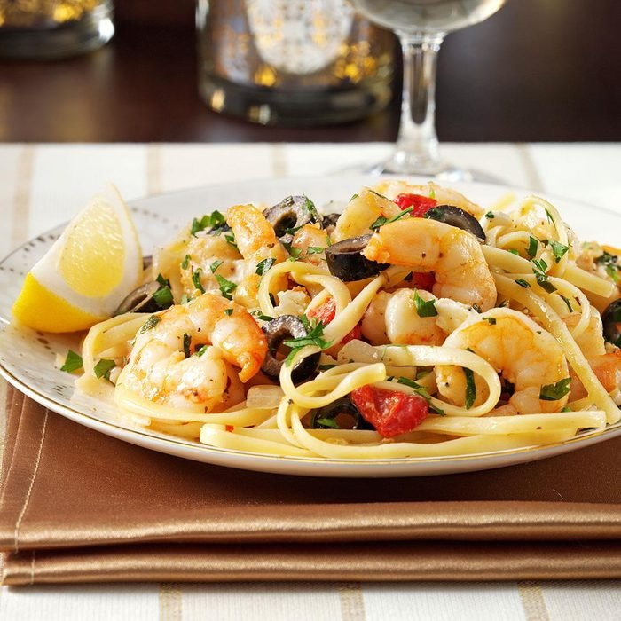

Mediterranean Shrimp Linguine

Description
This mediterranean inspired pasta dish makes for a great tasting and simple family dinner everyone will enjoy. The abundance of flavors, a touch of heat and beautiful presentation give your palate and eyes a feast.
8 Servings
Ingredients
- 16 oz linguine
- 2 lbs uncooked medium shrimp, peeled and deveined
- 1 medium onion, chopped
- 6 tbs olive oil
- 4 garlic cloves, minced
- 1 cup chopped roasted sweet red peppers
- 4-1/2 oz sliced ripe olives, drained
- 1/2 cup minced fresh parsley
- 1/2 cup white wine or chicken broth
- 1/2 tsp crushed red pepper flakes
- 1/2 tsp kosher salt
- 1/2 tsp dried oregano
- 1/2 tsp pepper
- 3/4 cup crumbled feta cheese
- 2 tbs lemon juice
Steps
- Cook linguine as instructed on the package.
- While the pasta cooks, in a large skillet, saute the shrimp and onion in oil until the shrimp turn pink. Add garlic; cook 1 minute longer. Stir in the red peppers, olives, parsley, wine, pepper flakes, salt, oregano and pepper. Reduce heat to a simmer.
- Drain the linguine, keeping 1/2 cup of the pasta water.
- Add the linguine, pasta water, feta cheese and lemon juice to the skillet; stir until the feta cheese is melted.
- Serve and let your tastebuds rejoice!
Return to Recipe List